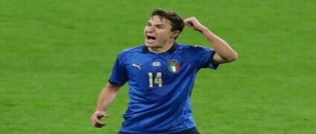

Federico Chiesa, de querar dejarlo a los 13 años a ser la estrella de Italia
La historia del futbolista que nos batió en la última Eurocopa

Antonio Jiménez Actualizado
Solo Federico tenía el convencimiento de que él era un megacrack, concretamente el de esta Italia. Él no duda jamás, ni de su fútbol ni de sí mismo.
Chiesa juega como si cada lance fuera el último, cada acción decisiva y cada noche el gran partido de su vida. Nació con esa idea preconcebida
(no ahondaremos sobre su historia familiar, sobradamente contada en numerosas ocasiones, como aquí o aquí). Mancini empezó a sospecharlo cuando
la idílica fase de grupos tocó su fin y las eliminatorias empezaron a aflorar la esencia de una cultura. La presión de Austria, los contraataques
de Lukaku y De Bruyne o el circuito de pases de Luis Enrique italianizaron a Italia: si querían ganar, debían defender como nadie y acertar más que
el rival. Y ahí emerge la figura de nuestro protagonista. Porque además Chiesa tiene una forma muy italiana de concebir el juego. Es un ganador. Y
busca ganar, por encima de todo, como sea. Ni estético, ni un prodigio en casi ninguna de sus acciones.
Mancini, una y no más, no creyó que fuera oportuno recurrir a Fede hasta el minuto 84 de los octavos de final contra Austria, el primer momento del
torneo en el que el partido se alejaba del dominio italiano y amenazaba con decidirse en base a aleatoriedad. Italia estaba acomodada en el halago y
todavía no había recuperado su contigüidad al sufrimiento. Necesitaba recuperar sensaciones en el punto de penalti antes de los platos fuertes, pero,
claro, para llegar a ellos, también iba a necesitar dinamita. Y Chiesa fue la estrella cuando Italia, por fin, necesitó de una. Incluye gol(azo) 25 años
y 12 días después de que lo lograra su padre Enrico en una Eurocopa y 10 minutos después de saltar al campo ante Austria. Chiesa fue la solución cuando el
equipo italiano, por más flexible que fuera, dio con el límite de la tensión a la que podían llegar sus cuerdas (véase gol previamente anulado a Arnautović).
Italia tuvo que ser Italia para poder ganar otra Eurocopa desde el año 1968, con una gesta de Donnarumma, con un gol de Bonucci, con un agarrón de Chiellini.
Pero ganó... igual que Federico Chiesa que nació para esto. Jugador de noches grandes, nacido para ganar.
Antonio Jiménez
Nací hará hoy treinta años, en un caluroso 3 de octubre de 1988, en la Maternidad de un hospital situado en la ciudad de Murcia.
Si bien el tercero y más joven de de mis hermanos, mi nacimiento fue también altamente deseado por mis padres. Los dos primeros
años de mi vida fueron muy felices, rodeado de mi familia y empezando a descubrir el mundo que me rodeaba. Sin embargo durante el
segundo de ellos mis padres recibieron una oferta de trabajo en Madrid, mudándonos todos a un piso cercano a la Puerta del Sol.
Te recomendamos
¡Bombazo en la NBA! Los Brooklyn Nets se cansan de Kyrie Irving y podrían prescindir de él esta misma temporada
Pochettino: "Quizá la realidad de Sergio Ramos es otra que la de 2014"
Quique: "Le deseo lo mejor a Míchel, es un gran entrenador"
Comentarios
Pepito El Palotes
Ojalá Quique tenga éxito en el Getafe, es muy buena persona


Pepito El Palotes
Ojalá Quique tenga éxito en el Getafe, es muy buena persona